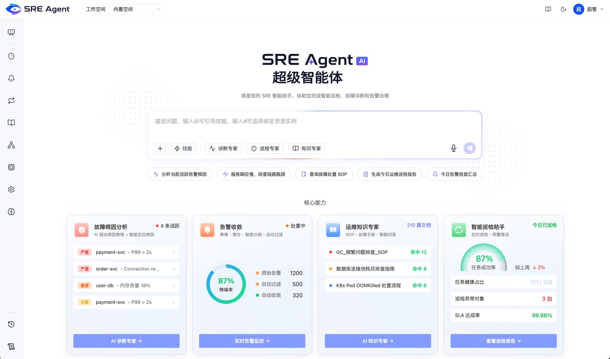

传统运维排障信息分散、耗时，并依赖专家经验。
AI Agent / AIOps / B2B
讯飞 SRE Multi-Agent
从传统运维流程到可信、可控的 AI 运维协作
运维需要的不是一个新的问答入口，而是能够跨系统取证、推进任务，同时保留人工控制的 Agent。
定义 Agent 能力边界，设计任务流、证据链、异常兜底与人工确认机制，并推动原型和研发交付。

01
项目概览
我解决了什么问题
把依赖专家经验的复杂运维流程，转化为初级运维人员也能理解、验证和接管的 Agent 协作过程。
完成面向运维业务场景的 SRE Multi-Agent 产品设计
以故障诊断为主线，串起任务发起、跨系统取证、形成判断与人工接管。
负责从需求到交付的产品工作
主导需求分析、产品方案与 PRD；设计 Agent 任务路由、交互原型和 Prompt 策略，协同研发明确实现规则。
首页任务入口与主场景流程
围绕任务发起及诊断、巡检流程，覆盖智能诊断、知识问答、智能巡检与告警治理。
推动核心场景形成可交付方案
完成诊断、巡检与知识问答的产品规划和原型验证，明确证据展示、人工确认与异常兜底机制，推动需求进入研发交付。
02
问题定义
为什么传统排障效率低
用户为什么在排障中花了大量时间，却仍难以快速形成可靠判断。
CURRENT SITUATION / 传统排障
用户时间主要消耗在跨系统补齐上下文
收到异常告警后，用户需要在多个系统中分别查询指标、日志、链路、变更记录和历史案例，再对齐资源对象、环境与时间范围，逐步判断故障影响范围与可能根因。
- 01收到异常告警
- 02确认对象与影响范围
- 03查询指标与日志
- 04检查链路与变更
- 05比对历史案例
- 06推测可能根因
- 07决定处理方式
三类核心阻力
信息分散
指标、日志、链路、告警、变更记录和历史案例分散在多个系统，用户需要频繁切换页面和查询工具。
排查耗时
用户需要手动对齐资源对象、时间范围和异常现象，大量时间消耗在信息检索与比对。
依赖专家经验
故障范围与根因判断依赖对业务、服务拓扑和历史问题的经验，经验不足的用户难以快速建立完整排查路径。
核心问题不是缺少查询工具，而是用户必须在多个系统之间手动补齐上下文、建立证据关系并完成判断。
辅助论证 / Agent 趋势
AI 正在从回答问题转向执行任务
相比一次性问答，Agent 更强调围绕一个目标持续推进：理解任务意图，拆解执行步骤，调用工具获取信息，并根据中间结果继续判断下一步。
理解目标拆解步骤调用工具补齐上下文推进任务
| 领域 | Agent 承担的任务 | 主要价值 | 依据 |
|---|---|---|---|
| 客服 | 查询、判断、工单流转 | 缩短处理链路 | 流程标准、信息可查、结果可追踪 |
| 销售 | 信息收集、客户研究、跟进建议 | 减少重复工作 | 任务高频、信息分散、建议可审核 |
| 研发 | 代码理解、生成、测试 | 提高研发效率 | 目标可拆解、工具可调用、结果可验证 |
| 运维 | 监测、取证、诊断、方案生成 | 缩短故障处理时间 | 多步骤、多工具、多数据源、高上下文依赖 |
03
产品判断
为什么用 Agent，以及它不该做什么
关键不是把聊天框放进运维平台，而是判断哪些任务适合 Agent 推进，哪些必须保留人工控制。
| 维度 | 通用聊天 | SRE Agent |
|---|---|---|
| 任务理解 | 依赖单轮文本判断 | 意图识别、参数补全、用户审核 |
| 数据来源 | 通用知识或用户输入 | 指标、日志、告警、链路、变更记录 |
| 执行过程 | 过程难以感知 | 展示任务状态、工具调用与证据来源 |
| 输出结果 | 文字回答为主 | 事实、推断、建议与不确定性分层 |
| 风险控制 | 用户自行判断 | 高风险操作保留人工确认和接管 |
Agent 适配运维的三个原因
任务可以拆解
排障目标可以拆成告警确认、数据查询、证据比对、根因判断和处理建议。
需要多工具与多数据源
诊断过程天然依赖指标、日志、链路、变更记录、告警规则和历史案例。
结果可以验证
中间证据和最终判断都能被用户基于监控数据、历史案例和人工经验复核。
Agent 能力边界
以传统运维流程为基础，结合任务特征、执行风险和结果可验证性，判断 Agent 在不同环节中的介入程度。
| 运维环节 | 任务特征 | Agent 适配度 | 产品决策 | 人工介入方式 |
|---|---|---|---|---|
| 环境与采集配置 | 配置相对明确，但错误成本高 | 中 | 采用规则化辅助 | 用户确认配置、权限和采集范围后生效 |
| 指标与日志监控 | 持续、稳定、自动执行 | 低 | 保留传统系统 | 日常监控无需人工介入，异常时由用户判断 |
| 告警发现 | 规则驱动，对实时性要求高 | 低 | 保留传统能力 | 用户负责配置、审核和调整告警规则 |
| 告警诊断 | 多数据源取证，高度依赖经验 | 高 | 作为核心 Agent 场景 | Agent 完成取证与分析，用户验证关键判断 |
| 治愈方案生成 | 需要结合上下文进行推理 | 高 | Agent 生成，人工确认 | 用户审核、修改并决定是否采纳方案 |
| 自动执行修复 | 操作风险与权限要求高 | 中 | 暂不自动执行 | 必须由用户确认并执行，必要时终止或回滚 |
| 巡检异常分析 | 重复、批量，分析过程可标准化 | 高 | 作为 Agent 重点场景 | Agent 批量分析，用户复核异常与处理建议 |
| 经验沉淀 | 信息分散，需要持续整理与复用 | 高 | Agent 辅助生成 | 用户审核内容后再发布或写入知识库 |
Agent 负责跨系统检索、证据关联、初步分析和任务推进；用户负责验证关键判断，并保留高风险操作的控制权。
04
关键设计
如何让 Agent 可信、可控、可接管
把可信与可控落到三项产品机制：正确进入任务、基于证据判断、关键操作由人接管。
让用户进入正确的任务
- 问题
- 开放式聊天容易误解意图，缺失上下文时可能进入错误工作流。
- 我的判断
- 先确认任务与对象，再调用工具；信息不足时先澄清。
- 设计机制
- 展示高频任务，识别意图后由用户确认
- 补齐资源对象、环境与时间范围
- 意图或信息不明确时兜底，暂停工具调用
- 带来的价值
- 减少试探和误启动，避免错误任务继续执行。
让结论可以验证
- 问题
- 用户看不到数据来源和推理过程，结论难以验证。
- 我的判断
- 将事实、推断与建议分层；证据不足时明确说明。
- 设计机制
- 展示工具调用与数据来源
- 区分事实、根因假设和修复建议
- 标出缺失信息与不确定性
- 带来的价值
- 用户能核对并修正判断，降低无依据结论的风险。
让高风险操作可以接管
- 问题
- 修复操作会影响生产环境，权限、影响范围和回滚风险不可忽略。
- 我的判断
- Agent 可以推进分析，关键执行权交还用户。
- 设计机制
- 自动完成查询、汇总与分析
- 方案和脚本供用户检查与修改
- 执行、变更和重启前人工确认；失败时可接管
- 带来的价值
- 缩短分析路径，同时保留用户对高风险操作的控制权。
05
场景验证
Agent 如何在真实任务中工作
用诊断任务和巡检任务验证同一套机制：任务理解、证据展示、异常兜底和人工控制能否跨场景复用。
| 用户 | 主要需求 | Agent 价值 |
|---|---|---|
| 初级运维 | 不知道从哪里开始排查 | 提供诊断路径和操作建议 |
| 高级运维 | 需要快速聚合证据 | 减少跨系统查询与重复分析 |
| 运维负责人 | 需要标准化流程和知识沉淀 | 提高团队诊断一致性 |
| 平台管理员 | 关注权限、数据接入和系统稳定性 | 管理 Agent 能力边界 |
05.1 / 诊断任务
从一次诊断任务看人机如何协作
在主诊断与治愈场景中，Agent 并不替代全部传统系统，而是介入最需要数据关联和经验判断的环节。
告警配置与告警发现先完成数据准备
进入告警诊断前，需要确认监控数据、资源关系、访问权限和诊断范围已经准备完整，并把分散告警整理成可进入诊断的异常事件。
治愈闭环与文档沉淀保留人工判断
Agent 可以生成处理方向和知识初稿，但方案采纳、执行操作和知识发布仍由用户审核与确认。
发起任务
用户从告警详情或首页任务入口发起诊断
产出诊断任务
确认范围
Agent识别任务意图，确认资源对象、环境和时间范围
用户审核和调整
采集证据
Agent调用指标、日志、链路、告警和变更记录
产出证据链
展示过程
Agent持续展示任务状态、工具调用结果与证据来源
用户查看过程
形成判断
Agent输出可能根因、可信度与修复方向
产出可验证判断
用户决策
用户确认、修改或终止治愈方案
产出处理决策
05.2 / 巡检任务
巡检任务：从巡检计划到异常处置
巡检任务验证同一套机制能否复用到批量、重复、可标准化的运维场景：Agent 降低配置与分析成本，传统系统负责稳定执行，用户保留确认与处置权。
创建计划
用户选择定时巡检或立即执行
产出巡检计划
配置对象
Agent辅助匹配资源对象、脚本和阈值
用户确认范围
执行任务
传统系统按计划执行采集
Agent监控任务状态
发现异常
Agent识别异常趋势和风险项
产出异常列表
分析问题
Agent关联上下文并生成说明
用户复核判断
用户处置
用户确认建议、忽略或转入诊断
产出处理结果
06
结果与反思
我最终交付了什么
把跨团队推进和项目结果合并呈现，直接说明产出物、产品结果和仍需验证的部分。
最终交付与产品结果
| 工作侧 | 产出 |
|---|---|
| 业务侧 | 与运维专家梳理诊断流程、判断依据和风险边界 |
| 产品侧 | 定义任务输入、路由规则、执行状态、上下文和异常分支 |
| 交互侧 | 通过原型验证证据展示、任务状态和人工确认节点 |
| Prompt 侧 | 形成 Prompt 策略，约束输出结构、证据引用与不确定性表达 |
| 研发协同 | 明确工具调用、数据链和上下文传递规则，推动需求进入研发交付 |
| 产品结果 | 完成诊断、巡检和知识问答等核心场景的 Multi-Agent 产品规划，建立任务路由、证据展示、人工确认和异常兜底机制 |
待验证的业务指标
产品反思
第一阶段没有直接开放自动治愈，并不是 Agent 无法生成方案，而是执行权限、影响范围和回滚能力尚未达到可靠自动化的条件。对于高风险运维任务，自动化程度并非越高越好，关键是让用户理解依据、验证判断并保有最终控制权。
当前尚缺少长期真实用户行为数据，因此待验证指标仍需在实际业务中持续验证。现阶段产品验证更多来自内部业务需求与专家反馈；下一阶段需要进一步验证不同角色对证据深度、自动化程度和人工确认节点的差异化需求，并根据实际任务完成率、人工接管率和建议采纳率持续调整人机分工。
这个项目的关键不是把 AI 放进运维平台，而是把不透明的 AI 回答，转化为用户能够理解、验证和接管的任务协作过程。